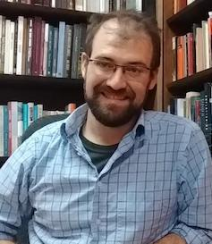

Ted Dawson
Assistant Professor of Practice, University of Nebraska-Lincoln
I teach Austrian and German literature and culture from the 19th century to
the present, focusing especially on environmental humanities, digital humanities, and sound and media studies. I also direct the German MA program at UNL, and am a faculty affiliate in the Center for Digital Research in the Humanities.
Before coming to Nebraska, I was Visiting Assistant Profesor at the University of Maryland, where I helped
establish an interdisciplinary environmental humanities research community.
I have published on Austrian rap music, multilingualism in German studies, the emerging field of EcoDH / environmental digital humanities, and Austrian author Christoph Ransmayr as poet of the Anthropocene.
I have taught a wide variety of German language and culture courses, and particularly enjoy teaching German and Austrian literature of the environment and German vocal music from Schubert to hip-hop.
The four years I've spent researching and teaching in Austria and Germany have been almost exclusively spent in cities beginning with the letter "W" (at least in German): Würzburg, Wiesbaden, and above all, Wien (Vienna).
PhD Vanderbilt University
MA University of California, Berkeley
BA Davidson College
 https://orcid.org/0000-0002-9192-6233
https://orcid.org/0000-0002-9192-6233